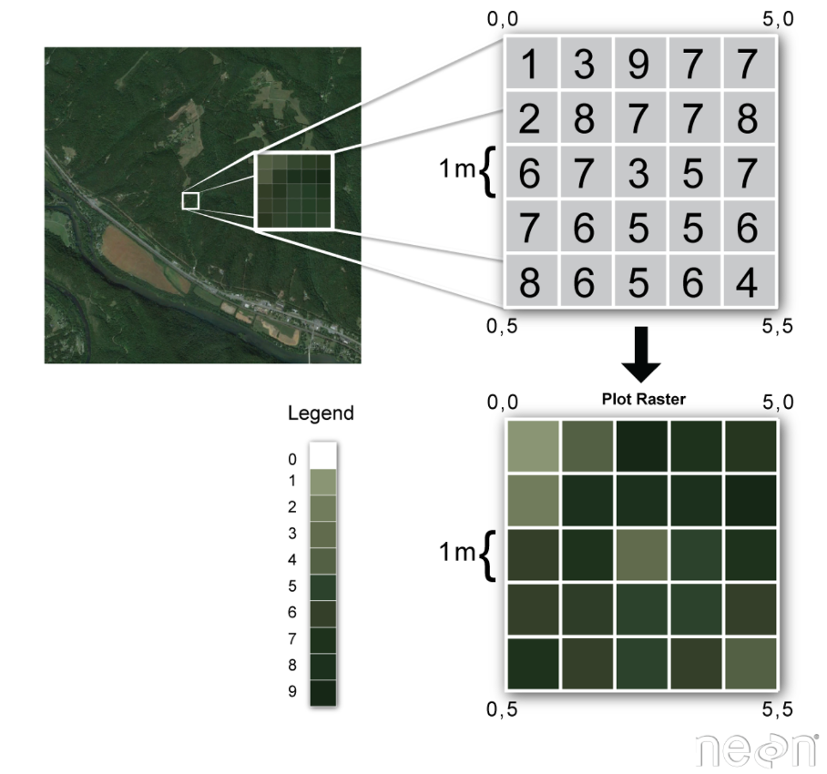
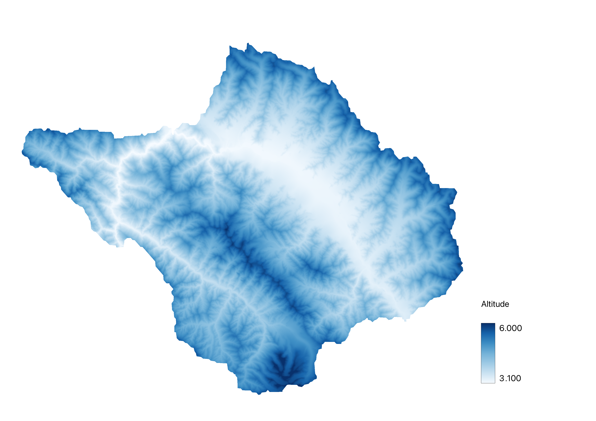
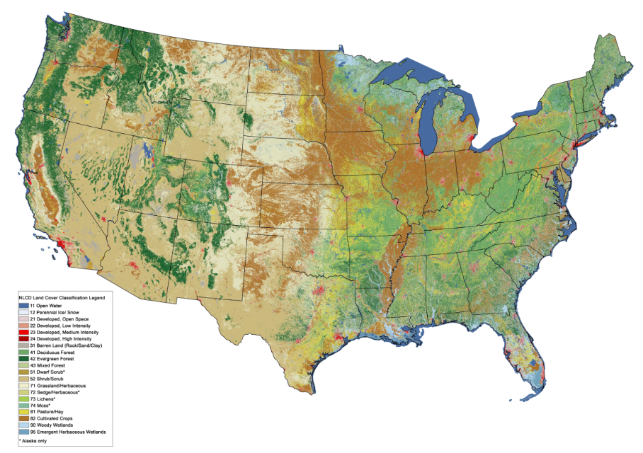
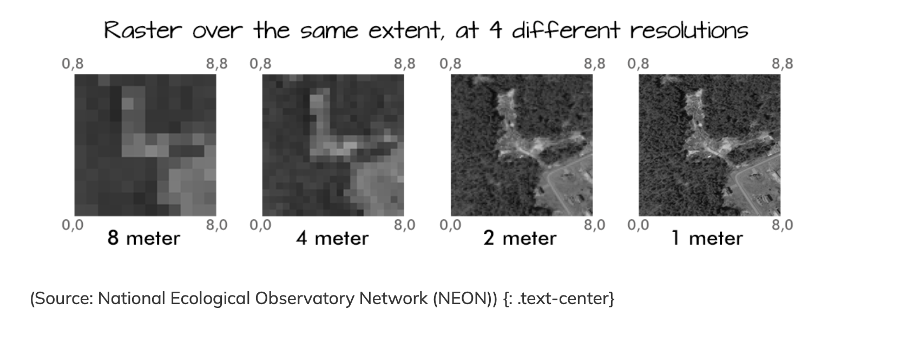

Remote Sensing and Raster data theory 🛰️#
What is Raster Data#
Raster data is next to vector data a fundamental component of GIS and represents spatial information as a rectangular grid of cells or pixels that are each associated with a specific geographical information. Each cell contains a value representing a certain attribute, such as elevation, temperature or land cover within a specific area. Regarding their structure geospatial rasters are very similar the representation of optical information in a digital picture, the difference being that a geospatial raster is accompanied by spatial information that connects the data to a particular location.
The data format raster data is particularly useful for capturing continuous phenomena across a geographical area such as temperature or elevation that do not suit the visualization with vector geometries due to their continuous nature without clear boundaries.
In each raster cell information is stored with a value that can be interpreted in the context of the attribute/phenomenon the raster expresses, for example elevation in meters or colour intensity in case of an image.
{kind=link}

Basic concept of a spatial raster#
Types of Raster Data#
Raster data can be distinguished in two two common types according to the type of information that is displayed: Continuous and categorical raster data.
Continuous raster data refers to datasets where the values assigned to each pixel represent continuous phenomena that vary smoothly across the area covered by the raster. Some examples of continuous rasters include:
Precipitation Maps displaying variable precipitation sums
Digital Elevation Models containing altitude values
Spatially variable Indices such as the Normalized Difference vegetation Index (NDVI)
{kind=link}

Exemplary Digital Elevation Model of an area in the Indian Himalayas#
Discontinuous rasters contain categorical data, where each pixel represents a discrete class value rather than a value on a continuous scale. The information in these types of raster is sometimes also suitable for the storage with vector data. Some examples of classified maps include:
Landcover/Land Use Maps with discrete classes
Tree height maps classified as short, medium, and tall trees
Risk maps with multiple distinct risk classes
{kind=link}

Exemplary land cover classification raster of the USA#
Properties of Raster data#
Spatial Extent#
The spatial extent of a raster refers to the geographical area covered by the grid of cells in the raster dataset. It defines the boundaries of the raster dataset in terms of its geographical coordinates. The spatial extent is typically described by the minimum and maximum values of the spatial coordinates in every geographical direction (e.g. minimum and maximum latitude and longitude) that encompass all pixels of the raster.
Spatial Resolution#
The spatial resolution of a raster refers to the area represented by each individual pixel on the ground in the real world. It quantifies the level of detail of the spatial representation within the dataset. For example, a spatial resolution of 30 metres per pixel means that each pixel represents an area of 30x30 metres on the ground. High spatial resolution means smaller pixel sizes, resulting in finer detail and more accurate representation of spatial features within the dataset.
{kind=link}

Different spatial resolutions of the same raster#
Coordinate Reference Sytem (CRS)#
As with vector data, the Coordinate Reference System (CRS) of a raster dataset refers to the spatial reference framework used to define the geographic location and orientation of the raster on the Earth’s surface (CRS WIKI link). It provides a standardised way of representing spatial coordinates and ensures that raster data can be accurately geolocated and integrated with other geo-spatial datasets.
The CRS includes a number of different parameters:
Coordinate system: This defines how spatial coordinates are represented. Common coordinate systems include geographic (latitude and longitude) and projected (e.g. Universal Transverse Mercator - UTM).
Datum: The datum specifies the reference ellipsoid and geodetic parameters used to model the shape of the Earth. It ensures consistency of spatial measurements across different datasets (e.g. the WGS 84 ellipsoid).
Unit: The unit of measurement for spatial coordinates, such as metres (e.g. in UTM) or degrees in the case of geographical coordinates.
Origin: The origin or reference point of the coordinate system, which may vary depending on the projection method used.
Metadata#
Metadata for raster data consists of descriptive information that provides context and details about the raster dataset. It includes information such as the dataset source, creation date, spatial extent, spatial resolution, coordinate reference system (CRS), data type, units, compression techniques, processing steps, accuracy ratings, and copyright/licensing information.
This metadata helps users to understand the content, origin, quality and appropriate use of raster data. It facilitates data discovery, evaluation and integration into geospatial workflows, ensuring that users can effectively interpret and use the data for their specific applications.
{kind=link}
Metadata of raster dataset of population counts (Worldpop)#
File Format#
There are multiple different file formats for storing an working with raster data. Following a short overview over the most common formats that you will likely come by as you work with spatial rasters:
GeoTIFF (.tif/.tiff): Widely used file format, supports georeferencing and metadata.
GeoPackage (.gpkg): Open format for storing geospatial data, supports raster and vec-tor.
JPEG (.jpg/.jpeg) & PNG (.png): Common formats for images, lacks georeferencing.
Esri Grid (.adf): Esri’s raster format, used in ArcGIS, supports georeferncing amd metadata
GeoPackage (.gpkg): Open format for storing geospatial data, supports raster and vec-tor.
Use and Sources of Raster Data in the Humanitarian Sector#
In the humanitarian sector, many different types of raster data are used in various application areas. The most important grid types include population grids, which can form the basis for calculating the exposure of the population to a natural hazard like floods, or precipitation grids, which can significantly help to understand droughts.
If raster data is available at several points in time or even as a continuous data series, parameters such as the condition of agricultural land can be measured with data like a series of rasters of a vegetation index.
Main products/raster types you may come across in the humanitarian sector include:
Population rasters offered by Worldpop
Digital elevation models like the SRTM DEM
Land use and land cover Classifications
Risk maps like flood inundation zones alongside rivers
Popular and proven sources for raster data include:
HDX (The Humanitarian Data Exchange) Data Portal:
#
Offering: Hosts a wide range of humanitarian data for a variety of countries, including raster data regarding population counts/density and demographic parameters like age and sex structures or birthrates.
Pros and Cons
No account needed
Intuitive Interface with good filter options
Most of the data openly accessible and free
Many different data formats and sources, sometimes a unstructured
You can acces the HDX data portal (here).
USGS Earth Explorer#
Offering:The Data Portal of the US Geological Survey provides access to a vast collection of satellite imagery and derived products like DEMs and land cover data.
Pros and Cons:
Quite extensive archive of remote sensing data
Advanced search and filtering options
Account is needed for data download
Data search needs basic knowledge of geospatial data and remote sensing
You can acces the USGS Earth Explorer (here).
ESA Earth Online#
Similar to the USGS earth explorer the data portal of the European space agency (ESA) provides access to Earth observation data from various satellites and derived datasets like climate change indicators or disaster monitoring products.
Pros and Cons:
Wide range of basic and processed remote sensing products
Nice interface for visalisation and basic analysis
Account is needed for data download
Data search needs basic knowledge of geospatial data and remote sensing
You can access the earth online portal (here).